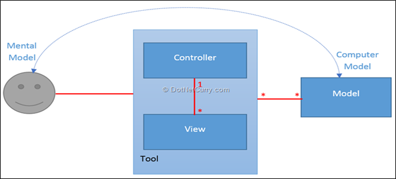
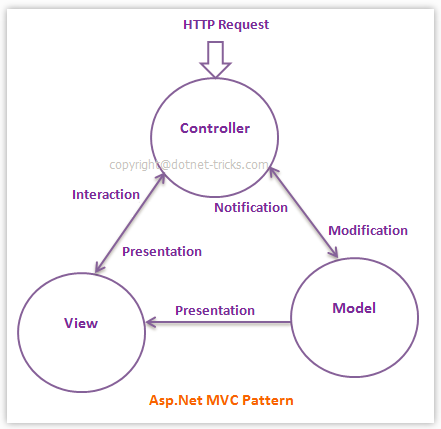
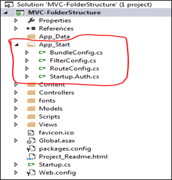
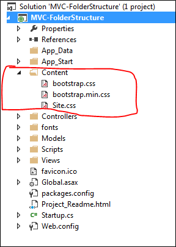
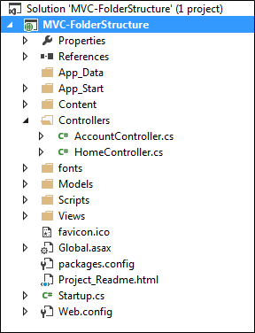
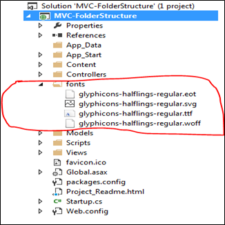
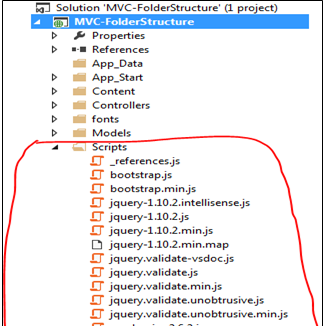
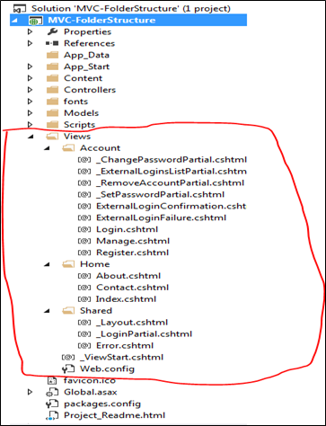

Blog
MVC – History & Folder Structure
MVC Framework
- ASP.NET MVC is based on the MVC design pattern that allows you to develop software solutions. For this, the MVC pattern provides a reusable solution to resolve common problems that occurs while developing a Web application.
- You can use the MVC pattern to develop Web application with loosely coupled components. It is very difficult to manage Web applications that contain tightly coupled components.
- This is because, updating one component also requires updating the other components.
- To overcome such problems, you can use the MVC design pattern that enables separating data access, business, and presentation logic from each other.
- While using the MVC design pattern, a Web application can be divided in the following three types:
- Model: Represents information about a domain that can be the application data of a Web application. In ASP.NET MVC applications, the model class represents this model.
- View: Represents the presentation logic to provide the data of the model. There can be multiple views for the same model. In ASP.NET MVC application, the files within the View folder of the application directory represent the view.
- Controller: Represents the logic responsible for coordinating between the view and model classes. The controller classes in an ASP.NET MVC application handles events thrown by the view and calls the corresponding model to be processed.
- As ASP.NET MVC is based on the MVC design pattern, it helps in developing applications in a loosely coupled manner and provides the following benefits:
- Separation of concerns: Enables you to ensure that various application concerns into different and independent software components. Thus, it allows you to work on a single component independently.
- Simplified testing and maintenance: Enables you to test each component independently. This helps you in ensuring that it is working as per the requirement of the application and then, simplifies the process of testing, maintenance, and troubleshooting procedures
- Extensibility: Enables the model to include a set of independent components that you can easily modify or replace based on the application requirement. Modifying or replacing these components does not affect the functionality of the application.
- ASP.NET MVC is a new Framework built on the top of Microsoft .Net Framework to develop web application. This framework implements the MVC pattern which helps to provides separation of code and also provide better support for test-driven development (TDD).
- ASP.NET MVC is a lightweight and highly testable open source framework for building highly scalable and well-designed web applications.
History
- ASP.NET MVC1
- Rleased on Mar 13, 2009
- Targets .NET Framework 3.5, Visual Studio 2008 and Visual Studio 2008 SP1 provide support to develop ASP.NET MVC 1 applications
- MVC pattern architecture with webform engine
- HTML Helpers (Lightweight helpers for rendering HTML tags)
- Concept of Routing
- Ajax helpers to easily ajaxify links and forms
- Automatic binding of posted forms to .NET objects and kind of model validation
- Unit Testing
- ASP.NET MVC2
- Released on Mar 10, 2010
- Runs on .NET 3.5, 4.0 and with Visual Studio 2008 & 2010
- Strongly typed HTML helpers means lambda expression based HTML Helpers (Html helper methods with lambda expression)
- Model validation based on attributes, both server and client side (Attribute based model validation on both client and server)
- Asynchronous Controllers
- HTML templated helpers, to automatically render edit forms and display pages based on the model and attributes applied on it (Templated Helpers)
- Data Annotations attributes, validation attributes and validation logic (Support for Data Annotations Attribute)
- Client side validation
- UI helpers with automatic scaffolding & customizable templates
- Areas to partition bigger applications
- Custom Templates
- Overriding the HTTP Method Verb including GET, PUT, POST, and DELETE
- ASP.NET MVC3
- This version of ASP.NET MVC was released on January 13, 2011 and targets .NET Framework 4.0. Visual Studio 2010 provides support to develop ASP.NET MVC3 applications
- Razor view engine
- Improved support for data annotations
- Remote Validation
- Unobtrusive JavaScript validation and general better JavaScript
- Dependency Resolver
- Global Filters
- Dependency Resolver
- Entity Framework Code First Support
- ViewBag to pass data from controller to view
- JQuery validation
- Compare Attribute
- Sessionless Controller
- Better JavaScript support with unobtrusive JavaScript, jQuery Validation, and JSON binding
- Use of NuGet to deliver software and manage dependencies throughout the platform
- Good Intellisense support for Razor into Visual Studio
- ASP.NET MVC4
- This version of ASP.NET MVC was released on August 15, 2012 and targets .NET Framework 4.0 and 4.5. Visual Studio 2010 SP1 and Visual Studio 2012 provide support to develop ASP.NET MVC 4 applications.
- ASP.NET Web API
- Enhancements to default project templates
- Mobile project template using JQuery mobile
- Display modes
- Task support for Asynchronous Controllers
- Bundling and Minification
- Support for the Windows Azure SDK
- ASP.NET MVC5
- This version of ASP.NET MVC was released on October 17, 2013 and targets .NET Framework 4.5 and 4.5.1.
- Visual Studio 2013 provides support to develop ASP.NET MVC 5 applications.
- ASP.NET identity
- ASP.NET Scaffolding
- Authentication filters - run prior to authorization filters in the ASP.NET MVC pipeline
- Bootstrap in the MVC template
- ASP.NET Web API 2
- ASP.NET MVC6
- This version of ASP.NET MVC was released on 18 November 2015 and targets .NET Framework 4.5.2
- Visual Studio 2013 & 2015 provides support to develop ASP.NET MVC 6 applications
- ASP.NET MVC 6 now has single aligned web stack for MVC 6 and Web API
- Yes, now we can develop ASP.NET MVC 6 or ASP.NET 5 against .NET core/ Full .NET and run in either Windows or Linux or Mac.
- The wwwroot folder represents the actual root of the web app when running on a web server. Static files like config.json, which are not in wwwroot will never be accessible, and there is no need to create special rules to block access to sensitive files.
- In addition to the security benefits, the wwwroot folder also simplifies common tasks like bundling and minification, which can now be more easily incorporated into a standard build process and automated using tools like Grunt.
- Client side dependency management is more important because client side has more different packages from server side. Client side will surely have jQuery, Bootstrap, grunt, any JavaScript frameworks like AngularJS, Backbone etc, images, style files.
- Client side package management in open source community has two great names “Bower” and “NPM”. They are part of “Dependencies”.
- Dependency Injection (DI) achieves loosely coupled, more testable code, it’s very important because it’s kind of coding standard.
- In ASP.NET MVC 5/4 or classic ASPX based applications, we use to have separate DI containers used like Unity, AutoFac, and StructureMap etc. We had to build up our project to use DI, its additional effort.
- Now in ASP.NET 5 or MVC 6 applications, dependency injection is inbuilt i.e. no setup headache for DI. Just create some services and get ready to use DI.
- Infact sample MVC 6 application has DI inbuilt in it, let’s open “StartUp.cs” and look for “ConfigureServices (IServiceCollection services)” method. Its main purpose is configuration of services like EF, Authentication, adding MVC and hand written custom services like IEmailServer and ISmsSender.
| MVC Version | Visual Studio | .Net Version | Release date | Features |
|---|---|---|---|---|
| MVC 1.0 | VS2008 | .Net 3.5 | 13-Mar-2009 |
|
| MVC 2.0 | VS 2008, | .Net 3.5/4.0 | 10-Mar-2010 |
|
| MVC 3.0 | VS 2010 | .Net 4.0 | 13-Jan-2011 |
|
| MVC 4.0 | VS 2010 SP1,VS 2012 | .NET 4.0/4.5 | 15-Aug-2012 |
|
| MVC 5.0 | VS 2013 | .NET 4.5 | 17-oct-2013 |
|
| MVC 5.2 | VS 2013 | .NET 4.5 | 28-Aug-2014 |
|
MVC Design Pattern
- Trygve Reenskaug is attributed with the formulation of the Model View Controller pattern in 1979 while working at XEROX’ Palo Alto Research Center (PARC).
- MVC was developed to solve the problem of users controlling large and complex data sets. The following rather unique image explains the main purpose of MVC – to bridge the gap between a User’s mental Model and the digital model that exists in the computer.
- Model: Models represent data and thus knowledge. It could be a single object or a hierarchy/tree of objects. However, they should only be dealing with only one problem domain, for example data about appointments is not in the same problem domain as the color of rectangle used to represent the appointment on the screen.
- View: Views are the visual representation of their respective Models. It can highlight certain Model attributes (properties) and suppress others.
- Controllers: The unit of interaction that serves as a link between the User and the System. It presents data to User by arranging various Views appropriately. It also provides means for user input such as mouse operations and keystrokes. A controller should never supplement a View.
- MVC has evolved really well and as ASP.NET MVC has shown, it can be very easily adapted. In context of Web Applications, MVC can be stated as follows:
- Models: Classes that represent the problem domain (the problem/requirement we are trying to solve/accomplish). These classes also have code and logic to serialize and de-serialize the data into dedicated data stores as well as do validation and domain-specific logic. In ASP.NET MVC, this is the place for ORM or Data Access frameworks to do their magic.
- Views: Views are essentially templates to generate the final HTML at runtime. Though, we say HTML, we could potentially return other types of Views like PDFs etc.
- Controller: The class that manages the relationship between View and the Model. It is also responsible for accepting requests from the User and deciding which View to serve up if any.
- The Model-View-Controller pattern was introduced in 1970s. It is a software design pattern that splits an application into three main aspects: Model, View and Controller. Moreover, MVC pattern forces a separation of concerns within an application for example, separating data access logic and business logic from the UI.

Model – “M” in “MVC”
- The Model represents a set of classes that describes the business logic and data. It also defines business rules for how the data can be changed and manipulated.
- Moreover, models in Asp.Net MVC, handles the Data Access Layer by using ORM tools like Entity Framework or NHibernate etc. By default, models are stored in the Models folder of the project. 
- The Model can be broken down into several different layers as given below:
- Objects or ViewModel Layer
- This layer contains simple objects or complex objects which are used to specify strongly-typed view. These objects are used to pass data from controller to strongly-typed view and vice versa. The classes for these objects can have specific validation rules which are defined by using data annotations. Typically, these classes have those properties which you want to display on corresponding view/page.
- Data Access Layer
- This layer provides objects to access and manipulate the database of your application. Typically, this layer is made by using ORM tools like Entity Framework or NHibernate etc.
- Business Layer
- This layer helps you to implement your business logic and validations for your application. This layer makes use of Data Access Layer for persisting data into database. Also, this layer is directly invoked by the Controller to do processing on input data and sent back to view.
- Objects or ViewModel Layer
View – “V” in “MVC”
- The View is responsible for transforming a model or models into UI. The Model is responsible for providing all the required business logic and validation to the view. The view is only responsible for displaying the data, that is received from the controller as the result.
- Moreover, views in Asp.Net MVC, handles the UI presentation of data as the result of a request received by a controller. By default, views are stored in the Views folder of the project.
Controller – “C” in “MVC”
- The Controller is responsible for controlling the application logic and acts as the coordinator between the View and the Model. The Controller receives input from users via the View, then process the user's data with the help of Model and passing the results back to the View.
- Moreover, controllers in Asp.Net MVC, respond to HTTP requests and determine the action to take based upon the content of the incoming request. By default, controllers are stored in the Controllers folder of the project.
ASP.NET MVC Folder Structure
- Visual Studio creates the following folder structure for MVC application by default.
App_Data
- App_Data folder can contain application data files like LocalDB, .mdf files, xml files and other data related files. IIS will never serve files from App_Data folder.
App_Start
- App_Start folder can contain class files which will be executed when the application starts. Typically, these would be config files like AuthConfig.cs, BundleConfig.cs, FilterConfig.cs, RouteConfig.cs etc. MVC 5 includes BundleConfig.cs, FilterConfig.cs and RouteConfig.cs by default.

Content
- Content folder contains static files like css files, images and icons files. MVC 5 application includes bootstrap.css, bootstrap.min.css and Site.css by default.

Controllers
- Controllers folder contains class files for the controllers. Controllers handles users' request and returns a response. MVC requires the name of all controller files to end with "Controller".

Fonts
- Fonts folder contains custom font files for your application.

Models
- Models folder contains model class files. Typically model class includes public properties, which will be used by application to hold and manipulate application data.
Scripts
- Scripts folder contains JavaScript or VBScript files for the application. MVC 5 includes javascript files for bootstrap, jquery 1.10 and modernizer by default.

Views
- Views folder contains html files for the application. Typically view file is a .cshtml file where you write html and C# or VB.NET code.
- Views folder includes separate folder for each controllers. For example, all the .cshtml files, which will be rendered by HomeController will be in View > Home folder.
- Shared folder under View folder contains all the views which will be shared among different controllers e.g. layout files.

Global.asax
- Global.asax allows you to write code that runs in response to application level events, such as Application_BeginRequest, application_start, application_error, session_start, session_end etc.
Packages.config
- Packages.config file is managed by NuGet to keep track of what packages and versions you have installed in the application.
Web.config
- Web.config file contains application level configurations.